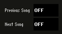
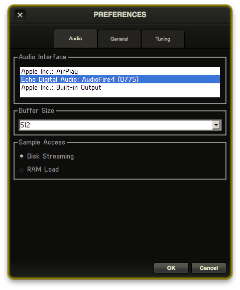
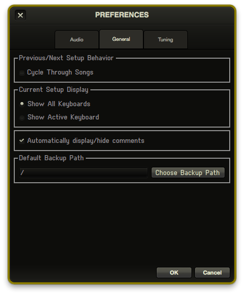
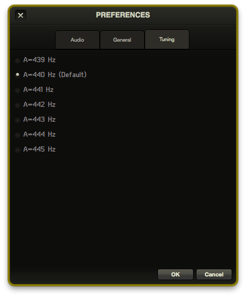

Operation
Playing RMS Keyboards®
Once RMS Keyboards® has been configured, launching the program will automatically activate your system. Simply press the keys on your connected keyboard or keyboards and the currently selected setup will play the correct sounds out of your computer. At this point, you are basically ready to perform the show!
Mod Wheel and Portamento
RMS Keyboards® provides full mod wheel support for classic Leslie effects and portamento control. You don't have to do any additional setup to enable these features. They are pre-programmed with appropriate values for the setups that require them.
Navigating Through the Show
Groups of setups are organized by song, and only one song may be active at any given time. Each player is responsible for advancing their setups as indicated in the score, but every player also has the ability to advance the song. You can imagine the problems that might occur if both Keyboard 1 and Keyboard 2 hit a hotkey advancing the song at the same time. All of a sudden, you are in “08 Fight (With Explosions)” instead of “07 Romantic Ballad”! For this reason, it is a good idea to designate a single person to advance the song via hotkey, and to disable the Next/Previous Song hotkeys for the other instruments. To do this, switch to Edit mode and, for each instrument, select the values in the Next Song and Previous Song fields, and set them to Off by hitting the delete key or spacebar.

In addition to controlling the current song or setup by MIDI hotkey, you can also use the computer keyboard to navigate. The up and down arrows will change the current setup for the active keyboard, and the Page Up and Page Down keys will change the current song. You can also use the mouse to select any song or setup.
Adjusting Volume in Performance
Every installation of RMS Keyboards® comes carefully pre-mixed for an excellent sounding audio configuration right out of the box. In addition, you have the ability to tweak and fine-tune the mix ahead of time. The ability to quickly adjust the overall volume in a performance setting will ultimately be decided by your specific audio setup. There is probably going to be a keyboard amp or other mixer in your setup where you (or your audio technician) can make adjustments.
To ensure that you have a good general volume to work with, however, we recommend going through the following steps:
- Plug in and turn on RMS Keyboards® and your external sound system.
- Test to make sure you are hearing sound.
- Select a suitably loud sound from RMS Keyboards®, and without making any volume adjustments in RMS Keyboards®, set the output volume on the external sound system to an appropriate level. If there are VU meters in your setup, then you should see a nice reading without clipping (hitting the peak value, or going into the red).
- Once you are certain you have a good default value, mark it with tape or some other means so you know where to set it.
Adjusting the Setup Volume via MIDI
As an alternative, it is possible to use MIDI to control the patch levels in each instrument within RMS Keyboards®. If you have a pedal or knob on your MIDI controller that can send out volume data (CC7), you can use it to scale the levels of the patches within the current setup.
For example, you have a setup consisting of separate patches for timpani, brass and strings. In pre-mixing, you set the timpani to a level of 120%, brass to 70% and strings to 100%. Then in performance, you can use a volume pedal to push the overall setup louder or softer, while preserving the relative levels of your pre-mix. Pushing the volume level all the way to its loudest would scale timpani to 200%, brass to 140% and strings to 200%. Moving the volume controller in the opposite direction would scale each patch smoothly to 0%. When the volume pedal is all the way down (loudest) each patch volume is twice as high as the default level, with a hard limit at 200%.
These changes are specific to the current setup only, and are not saved. Advancing to the next setup and returning will put each patch volume at its initial level (until you move the pedal again, of course).
Menu Commands
File
Using the commands in the file menu, you can have multiple versions of your show. For example, let's say that for performances you run a complicated 4-channel mix from your keyboard output, but occasionally you are in a rehearsal room with just a single speaker to play out of. You can use Save As to create a different version of the show for each situation.
Open
Loads the specified SHL file from the dropdown list.
You may notice additional .shb showfiles in the "Open Show" window, or in the showfile save directory on your computer. These are automatic backups created by RMS Keyboards® every time the program exits. You should not rely on just these files to backup your show data, however, since only the 5 most recent automatic backups are saved. There is a separate command to manually backup your data in a more permanent manner.
Save
Saves the current window configuration as well as any volume changes, reverb settings, hot key commands, and any other modifications to the default setup.
Save As
Allows you to save the current configuration under a different file name. Useful for creating multiple versions of the show or to create a "clean" copy of the show before making edits. Make sure you retain the .shl extension when using this command
Windows
Shows or hides any of the component windows in RMS Keyboards®.
Tools
Backup
Backs up all the SHL files on the computer. For more on Backup and Load, see below.
Get Sounds
Launches RMS SampleSync, which will update your sample library with the most recent sound samples.
Import Output Settings
Use this utility if you are working on multiple computers, each with a different number of outputs. Click here for details.
Load
Loads the specified set of SHL files. For more on Backup and Load, see below.
MIDI Reset
Sends an all notes off command to RMS Keyboards®, should any notes get stuck.
Output Labeler
Lets you relabel the various outputs to your audio interface to something besides the default "A", "B", etc. This is helpful if you are using a more complex multi channel audio setup.
Setup Wizard
Launches the configuration utility to assist you with routing MIDI devices, setting hotkeys, and choosing an audio output device.
Strip Keyboard
Launches the strip keyboard utility, which allows you to remove one or more keyboards from the showfile. This allows you to free up memory if you do not plan to run all keyboards from a single computer.
Help
Turn Tooltips Off
Disables tooltips in RMS Keyboards®.
RMS Keyboards® Manual
Opens this manual in your default browser.
RMS Website
Launches the RMS website in your default browser.
Purchase or Authenticate Full Version (trial mode only)
Launches the start-up screen where you can either purchase a license for RMS Keyboards® or authenticate an already-purchased installation.
Backup and Load
Using the Backup and Load commands, you can transfer all of your customized SHL files from one computer to another. With each license of RMS Keyboards®, you are given an extra unlock code to use on a backup computer. If your show has two keyboard books, you can authenticate RMS Keyboards® on three machines. You should have the third machine available to swap in at any time in case of a crash or other computer malfunction.
When you are ready to start performances, you should create a backup file for each computer that you are using in the pit, and then store those backup files on an external hard drive or USB stick. This way, if something should happen to one of your performance computers, all you need to do is load that computer's backup data on to your spare machine and you are ready to perform.
Import Output Settings
Suppose your RMS Keyboards® implementation involves a 16-channel mix. You've spent a lot of time carefully routing various layers to all available outputs. It sounds great and takes full advantage of your theatre's sophisticated sound capabilities.
However, you also want to rehearse at home, using your personal computer with just a simple 2-channel stereo mix. Furthermore, you want to continue making non-output related edits at home and use them at the theatre.
There are a few challenges here:
- You can't listen to the 16 channel mix on your 2-channel home system. So at home, the show's output settings need to be reduced. You will be prompted to save a new show file to accommodate this whenever you launch RMS Keyboards® on a system with fewer outputs than the previous launch.
- But if you make any changes that you then want to use at the theatre, you've lost all the careful routing to your 16 channels. This is where the Import Output Settings utility comes in handy.
As the name suggests, Import Output Settings lets you grab the output assignments from a different saved show. So if you load the 2-channel show file onto your theatre's computer, this utility will bring in the 16-channel assignments.
Note: it wlll ignore songs with changed names - and won't know what to do if you added songs. But it should get you most of the way there so that any of these discrepancies can quickly be addressed manually.
Preferences
You can open the preferences window through the RMS Keyboards® menu on Mac, or the Tools menu on Windows.
Audio

Audio Interface
This allows you select the specific audio interface to use with RMS Keyboards®. This can also be selected via the Setup Wizard.
Buffer Size
This allows you to specify the buffer size (128, 256, 512, or 1024) for RMS Keyboards® to use with your audio device. The best setting will depend on the type of computer you using, but in general you want to choose the smallest value that doesn't produce pops, clicks, or dropouts when running RMS Keyboards®. Larger buffers will increase the amount of latency when you play a note. This value is set to 256 by default.
Disk Streaming vs. Ram Load
By default, Sinfonia® loads samples via the disk streaming method. This allows it to dynamically load sounds and use fewer resources during live playback. As an alternative, you can tell Sinfonia® to load all of the samples that are used by the show into the computer's RAM.
If you decide to switch the sample access method, it won't be active until you relaunch the program.
General

Previous/Next Setup Behavior
When checked, this allows the Next/Previous Setup hotkey to automatically advance to the next or previous song when it reaches the end of the setup list. Please note, this functionality is enabled for ALL instruments, so it is generally a good idea to designate a single person to advance the song, and then disable those hotkeys on secondary instruments.
Current Setup Display
These options will change the behavior of the Current Setup window. If you are the only person playing from an installation of RMS Keyboards, it might be beneficial to set this to Show Active Keyboard, so that you aren't being presented with unnecessary information.
Automatically display/hide comments
When checked, the Comment window will automatically appear and disappear from its designated location on the screen, based on whether the selected setup has a comment associated with it.
Tuning

If you need to slightly adjust your entire RMS Keyboards® tuning slightly up or down (to match the tuning of the other players, you can do so here. By default, the program is set to A=440 Hz, but can be adjusted anywhere from A=439 to A=445.